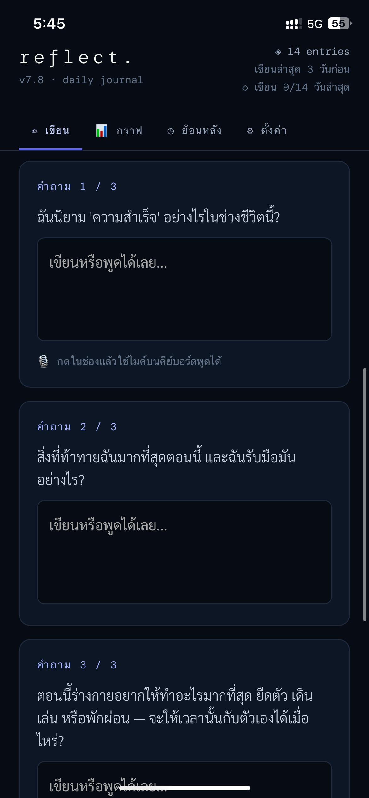
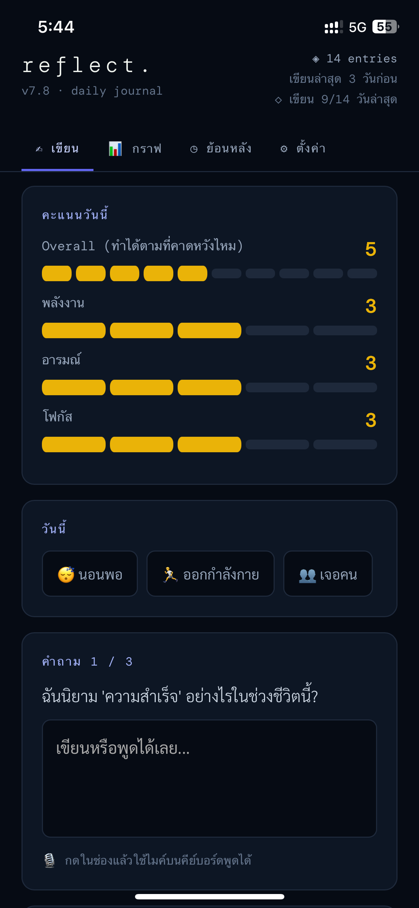
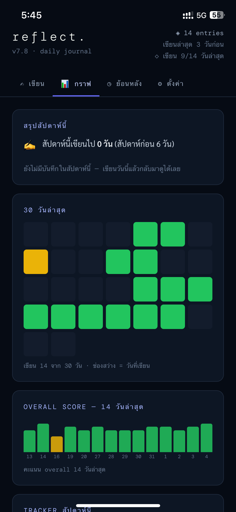

ข้อมูลอยู่กับคุณคนเดียว
ทุกอย่างที่เขียนถูกเก็บไว้ในเครื่องของคุณ ไม่ได้ถูกส่งขึ้นเซิร์ฟเวอร์ที่ไหนเลย
reflect.
Reflect คือไดอารี่รายวันที่เก็บทุกอย่างไว้ในเครื่องของคุณเอง ไม่ต้องสมัคร ไม่ต้องล็อกอิน ไม่มีใครแอบอ่านได้ — แค่เปิดขึ้นมาแล้วเขียน
เปิดแอปฟรี ไม่มีค่าใช้จ่าย· ไม่มีโฆษณา· ใช้ได้บนมือถือและคอมพิวเตอร์
WHY REFLECT
เขียนไดอารี่ควรเป็นเรื่องเบา ๆ และเป็นส่วนตัว — นี่คือสิ่งที่ Reflect ตั้งใจทำให้ดี
ทุกอย่างที่เขียนถูกเก็บไว้ในเครื่องของคุณ ไม่ได้ถูกส่งขึ้นเซิร์ฟเวอร์ที่ไหนเลย
มีโหมดเขียนเร็วสำหรับวันที่ยุ่ง ตอบสั้น ๆ ก็พอ ไม่ต้องฝืนเขียนยาว
เปิดใช้งานได้แบบออฟไลน์ เพราะแอปทำงานอยู่ในเครื่องคุณอยู่แล้ว
มีคำถามหมุนเวียนในแต่ละวันคอยชวนคุณคิด เผื่อวันไหนนึกไม่ออกว่าจะเขียนอะไรดี
HOW IT WORKS
แค่สามขั้นตอนง่าย ๆ ก็เริ่มได้เลย
จดสิ่งที่เกิดขึ้นในวันนี้ หรือตอบคำถามประจำวันสั้น ๆ ก็ได้

SCREENSHOT screenshot-write.pngให้คะแนนวันนี้ของคุณ เพื่อดูภาพรวมว่าช่วงนี้เป็นยังไงบ้าง

SCREENSHOT screenshot-rate.pngเปิดดูบันทึกเก่า ๆ ได้ทุกเมื่อ เห็นว่าที่ผ่านมาเราเป็นยังไงบ้าง

SCREENSHOT screenshot-history.pngINSTALL
เพิ่ม Reflect ไว้ที่หน้าจอโฮม เปิดใช้ได้เหมือนแอปทั่วไป
WATCH
คลิปสั้น ๆ พาใช้งานตั้งแต่เริ่ม
PRIVACY
Reflect ถูกออกแบบมาให้ความลับของคุณเป็นของคุณจริง ๆ ไม่ใช่แค่คำพูดสวย ๆ
เพราะข้อมูลอยู่ในเครื่องคุณล้วน ๆ ถ้าล้างข้อมูลเบราว์เซอร์หรือเปลี่ยนเครื่อง บันทึกก็อาจหายไปด้วย — นี่คือราคาของความเป็นส่วนตัวเต็มร้อย ที่แลกมากับการที่ไม่มีใครแตะข้อมูลของคุณได้เลย
FEEDBACK
ความเห็นของคุณช่วยให้ Reflect ดีขึ้น เลือกช่องทางที่สบายใจได้เลย